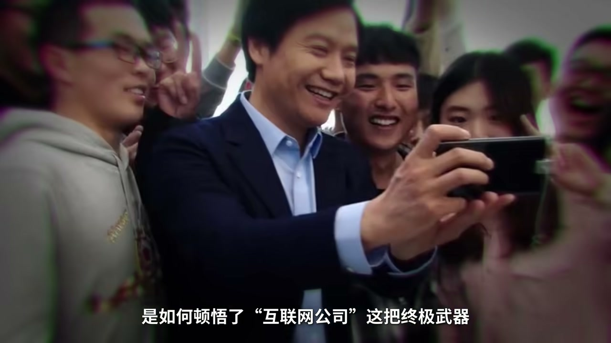
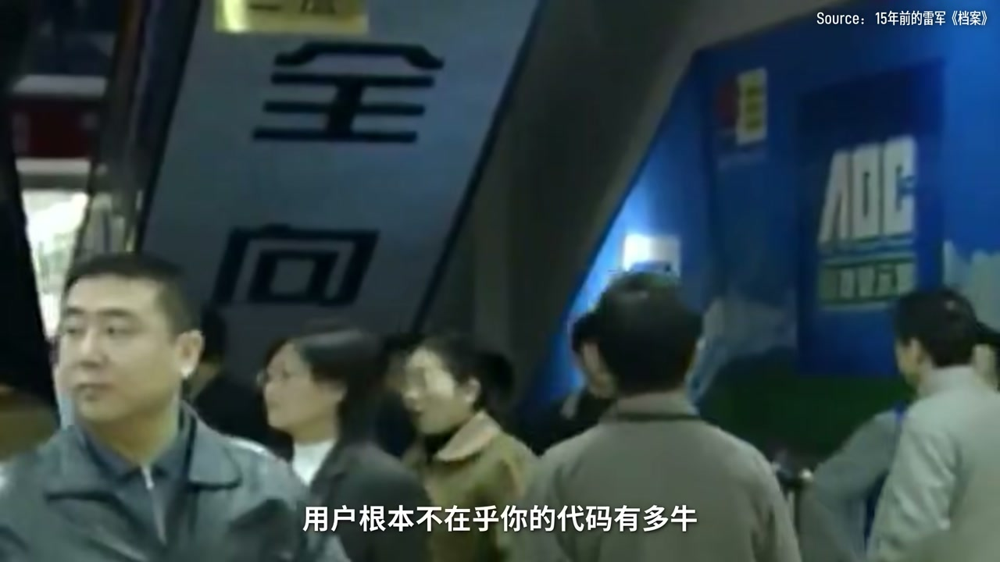
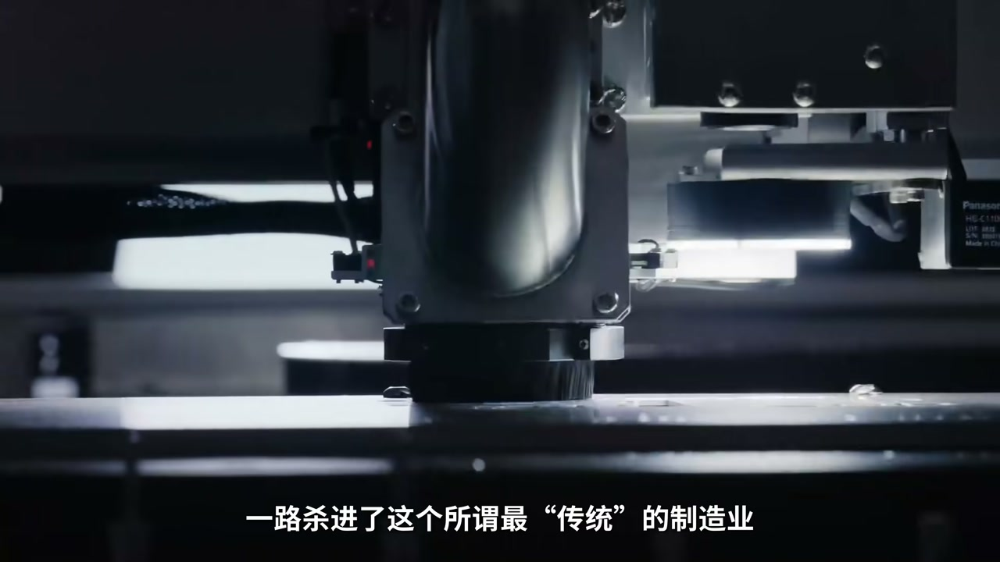
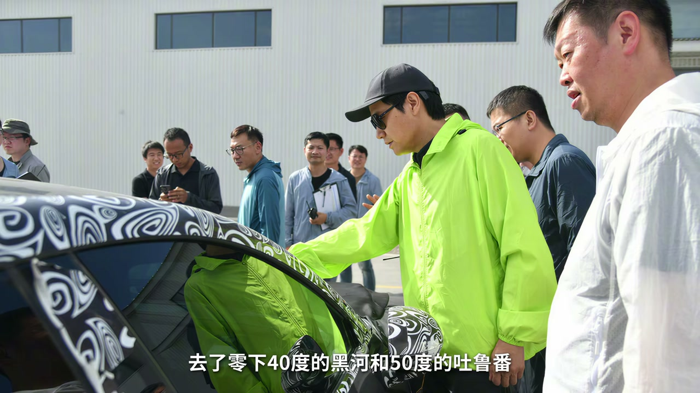

内容要点
MiMo V2.5 Pro 登榜时舆论再喊「雷军又赢了」：手机前三、造车打脸看客、大模型踹门。视频回看金山盘古失败、中关村站柜台顿悟「用户只为自己需求买单」、论坛结识丁磊马化腾却目送网易腾讯起飞；2007 后发誓做无库存无傲慢渠道的互联网公司，铁人三项=软硬互联。MIUI 周更绑极客→电商直销砍渠道→生态链亏本充电宝换规模→汽车把参与感塞进重资产，踩着被特斯拉新势力熬熟的供应链。大模型质疑吞金兽，但账号体系已埋在手机手环车里；未来五年研发两千亿，要进智能制造深水区。ASR：MiMo（口播 Memo）、涉军实体清单等已校正。
知识结构
汉卡被抄、盘古滞销、柜台听用户；错过门户十年。
MIUI→手机引流→生态链门店→汽车参与感。
晚到摘熟桃；账号生态接下大模型；硬核丛林无捷径。
「总能上桌」= 互联网效率定义产品 + 粉丝参与感分发 + 等别人把供应链熬熟后的超级产品经理能力；下一阶段若不能在芯片/材料/光刻级问题上交差，飞轮叙事会停在 PPT。
00:00-04:40劳模战术、时代战略落空
三色公司汉卡被大厂价格战反杀；金山盘古耗资千万卖不动，雷军站柜台发现销售先听需求再推产品——代码牛不等于买单。辞呈被拒后的半年泡 BBS，结识丁磊马化腾，却在之后十年看着互联网列车从头顶开过；卓越网卖早、金山上市仍像传统软件公司。


04:40-10:20互联网公司五字诀：从 MIUI 到汽车
天使投资旁观后摊开铁人三项：手机作流量入口，软件粘用户，互联网服务赚钱。2010 银谷大厦喝小米粥起步；先 MIUI 周更把槽点下周装进手机，再 2011 顶配「为发烧而生」电商直销。充电宝亏本换规模、小米之家用高毛利生态链养活门店；2021 涉制裁讨论后备胎后决定造车，考赛车本、试驾上百辆、黑河吐鲁番实测，定价参与感拉满。


10:20-16:01熟供应链、大模型与深水区
手机/生态链/汽车时间线都踩在产业链成熟之后，被嘲「摘桃子」；杀伤力来自审美定义+统一软件+海量分发。大模型曾被骂大公司病，MiMo 迭代却带回银谷熬夜感；账号早在体重秤手机车里打通，模型像长在既有生态。未来研发加码芯片 OS AI，性价比与参与感啃不动光刻与材料——雷军称已进智能制造丛林。
完整转录（579段）
以下文本由 Whisper 自动转录，可能存在识别误差；正文与导语已按语境校正专名与术语。
今年4月,当小米把Memo V2.5 Pro拍在桌子上
跑分遥遥领先的时候
全网同在高呼
雷军又赢了
卖手机,他赶到了全球前三
造车,让同行笑着进场
撇着嘴离开
正在搞大模型
又一脚踹踹的第一踢踢的大门
你发现没有
雷军总是赛道里最晚进场的人
但又总能一拉开椅子
就坐上主位
他天天被调侃是营销之神
是带着剧本下凡的现实版大男主
但小米走到今天
真的只靠发布会上的造梗和纯粹的命好吗?
大家好,我是小李
今天我们就撕开营销的表象
看看那个曾经被微软按在地上摩擦
被传统上演死局困住的中年人
是如何顿悟了互联网公司这把终极武器
一路杀灰派出
而在被AI浪潮苦气的今天
当这套打法被用到极致
小米又将头也不回地走向什么样的丛林
如果要一句话总结雷军在创立小米之前的岁月
那可能是战术上的中关村劳模
战略上的时代妻儿
我们把时间拨回1990年
21岁的雷军遭遇了人生的第一顿毒打
他和三个同学合伙创办了三色公司
做电脑汉卡
很快就把产品干出来了
结果刚一露面
底层代码就被资金熊熊的大厂直接招办
再用成熟的生产线和价格站瞬间实现反杀
四个年轻人穷到快没钱吃饭
公司也倒地散火
毕业后因为崇拜仇伯军
他加入了只有五个人的金山
想做中国最好的软件
很快又迎来了第二顿毒打
为了对抗强势杀入的微软
他带团队耗资2000万
历时三年死磕代码
锁出了盘古
但因为闭门造车
缺乏市场调研
盘古上市半年
只卖了2000套
公司账号产到只剩十几万
工资都要发不出来了
骄傲的雷军想不通
这么好的产品怎么就是卖不动
他决定一杆子捅到底
亲自跑去中关村最大的软件店
展柜台
前三天他拉着五颗疯狂标技术名词
结果一套都没卖出去
第四天他闭上嘴了
死死盯着店里的销罐看
他马上发现
销罐从不主动推销
而是先听客户到底要拿电脑干嘛
再顺水推舟
发出产品和宣传册
雷军如梦出行
用户根本不在乎你的代码有多牛
他们只为自己的需求买单
七天后
雷军已经成为了店里的销罐
而靠着这个顿悟
经常做出了电脑入门
等一批用户真正需要的产品
公司总算活了下来
但雷军自己反而陷入了更深的迷茫
他亲手证明了
战术上自己什么都能干
但战略上
跟维园这场仗
他看不到任何赢的希望
作为一家勉强活着的公司
对他没有任何吸引力
1996年4月
型户一轮的雷军递交了辞呈
但全国经没批
反手给他放了半年假
那半年雷军每天睡到自然醒
要么混际于各大BBS论坛
要么去泡吧蹦迪
甚至认真判断过
开个酒吧了子残身算了
有一次真的觉得干不下去了
就特别想转行去开酒吧
但命运的伏笔往往埋在最低谷
正是在这半年百滥期
作为BBS版主的他
在网上认识了两个
同样喜欢灌水的年轻程序员
一个是民国电信局的工程师
名叫丁磊
另一个在深圳一家叫潤迅的
巡护机公司当程序员
名叫马化腾
看着这俩人在帖子里
火热地描绘未来的网络世界
雷军心里都很快要熄灭的火
就慢慢烧了起来
1996年
雷军重振旗鼓
华丽回归
这次他不再跟微软硬碰硬
而是带着以战养战的新战术
杀了回来
顺着战规态势领悟到的先天用户
在做产品的思路
他之后掀起了
震惊全国的红色阵板风暴
把金山标价168的阵板软件
一刀砍到28块
三个月后买出了上百万套
而这也是他第一次
尝到极致性价比的甜头
用极低的门槛
据换海量的规模效应
但他懂了产品
懂了人性
却依然没能赢下那个时代
接下来的十年
雷军一眼睁睁的
看着互联网的时代列车
从自己头顶呼啸而过
作为一天工作16小时的劳模
当年的两个在论坛泡吧的好忽密
毕竟趁着中国互联网的狂风扶摇之上
做出了网易和腾讯
而雷军自己偶新内血浮华的电商网站
卓越网却没能熬过资本
寒冬卖给了亚马逊
并且在卖完短短三年后
电商在中国就彻底爆发了
2007年
37岁的雷军
终于带着金山在香港敲钟上市
市值53亿港元
但看着起是被市值的腾讯
阿里 巨人
雷军却怎么也高兴不起来
金山从骨子里
依然是一家传统软件公司
受注于生产周期和各种渠道商
在上市两个月后
雷军就辞去了CEO
而他转身想要寻找的那家公司
绝不能有压死人的库存
就不能受注于傲慢的渠道
必须直接面对海量用户
有超高的效率运转
他不能叫软件公司
也不能叫硬件厂
他只能叫互联网公司
这五个字具体落地长什么样呢
经历了曾经的两顿独打和10年的错过
雷军并不急于出手
他先是退到幕后做天使投资人
看看别人是咋起飞的
从优秀流浪器到拉卡拉
欢聚时代
三年的旁观换来了一个迟到的顿悟
金山的溃败从来都不是不努力
而是打法不对
顿悟之遇
雷军摊开了一张在当时看来
意想天开的大饼
啊不是
是蓝土软件硬件互联网
雷军称之为铁人三项
意思是三项全能缺一不可
在他的预设里
手机只是撬动移动互联网的最小载体
硬件终将留为不赚钱的流量入口
所以他要用硬件砸开大门
用软件粘住用户
最后靠后端的互联网生态
对传统商业完成真正的降维打击
如果我们站在当时的视角
看这张饼可以说是意想天开
互联网和大厂的极客
谷歌的林彬红蜂
不远的黄江脊
鲁托拉的周光平
金山九部黎万强
顶级设计师刘德等等等等
2010年4月6日
周冠村的银谷大厦
13位初创团队成员围住在一起
合下了一碗热气腾腾的小米粥
小米真是起盘
定位非常清晰
不是手机厂商
不是配件厂
就是互联网公司
而小米的第一款产品也确实不是手机
而是米UI
一个深度定制的安卓系统
因为互联网公司的起盘逻辑
必须是轻资产快递贷
雷军此刻
第一次发挥了他曾经作为BBS版主的基因
和当时小米的工程师们跑在论坛里
天天手机发少许的骂声和建议
苹果的系统一年一根
米UI硬生生搞出了周根
上周用户提的槽垫
下周直接装进你的手机里
而这种前所未有的参与感
让小米在连手机图纸都没画出来的时候
就死死绑住了一群极客
而第一批敢拿自己的主力级刷机的100个死忠粉
他们的名字给郑重刻井的米UI的开机画面
同时配了7个大字
感谢勇敢的上帝
一年后软件神态的温床哭的差不多了
小米的硬件才正式登场
2011年8月初在小米手机发布
当雷军甩出碾压通航的顶配参数
并在大屏幕上打出依旧救救员的瞬间
全场爆发出长达半分钟的狂吼
更绝的是这款手机只在小米网首发
没有写下去到
当年在京山被渠道上卡脖子的痛
它绝不允许重演
纯粹的电商直销
把传统厂商存存加价的利润空间一刀砍掉
全额返还给消费者
那时候全世界都以为
这个穿着黑T恤牛甲裤的雷军
是在像素级对标瞧不死
大家也都喊它雷不死
但雷军真正对标的其实是亚马逊
就像亚马逊把评头热度细
按成本加甚至亏本卖
就是为了把你拉掉它的系统
然后靠后端的数字生态
prime会员持续赚钱一样
小米直接剥离了手机的硬件暴利
把它变成了一张
把你拉进小米生态的门票
换句话说
从始至终
小米手机只是被雷军搬上互联网货架的
第一件引流爆品
然而小米手机最初的登场
应该是同行的冷嘲热讽
大家都觉得
你套搞流量搞抢购的互联网思维
只不过是轻资产的投机取巧
做个手机得了
真搬上重资产的硬核制造业
肯定得死
面对嘲笑
雷军一个反手就继续服用了这套互联网模式
一路杀定了这个所谓最传统的制造业
2013年
雷军下令开始做手机周边
为了降维打击
他做紫米充电宝石
单件成本77元
他赶69元亏本买
赌的就是传统制造商
根本不敢想到的规模效应
靠着极限的低价让销量瞬间破7万
再反过来
用规模把供应面成本断亚式砍下来
最终不仅没亏
还重写了整个行业的价格基准
紧接着是2016年
小米遭遇生死地步
因为缺乏卸下门店
销量暴跌到全国第五
雷军亲自接管
面对手机利润只有2%-5%
交不去实体电昂贵租金的死局
他给出了一套天才解法
把高毛利的净化器
台灯扫微机全塞进小米支架
用户经典看手机
顺手买就台灯
靠着生态链产品极高的连带率
硬生生把实体电撑活了
这在商业上
就把互联网的流量复用
完美搬进了物理空间
但充电宝和小米支架
都还只是前菜
这套打法的终极试镜使
是雷军人生中最难的一道题
也是最重资产的百年行业
造车
2021年1月
一道突入起来的制裁令砸了下来
小米被美国列入社军企业
在紧急召开的董事会上
有人问了一个极其现实
也极其让人后怕的问题
如果我们的手机业务真的做不成了
这三四万人干什么
经过70天的高强度调研
雷军做出了人生最后一次的
重大创业决定
造车
投100亿人民币
技术资源
自建工厂
消息一出
很多人认为是小米走投无路了
甚至是临时抱佛脚
虽然在宣布造车之前
雷军早就通过顺维资本
默默投资了蔚来
小鹏
以及上百家自动驾驶
激光雷达和电池供应链企业
但做投资人和自己下场造车
确实是实打实的两码事儿
而面对这一台重达两吨的精密机器
50多岁的雷军
并没有在办公室里指点江山
他骨子里好像还是那个愿意
去站柜台做销售的程序员
他为了真的懂车
亲自去考了赛车驾照
跑遍了全国的4S店
试驾了170多辆车
命令妈妈写下了
20万字的市价笔记
甚至跟着团队
去了零下40度的黑河
和50度的土路番
做极端路面测试
接下来的故事
你已经知道了
那个熟悉的雷军又回来了
他的BBS版主基因再次发动
他让用户在网上投票喜欢的车身配色
他在社区里引发全民讨论
小米体车到底卖多少钱
在微博上
也许有这几个月参数细节
2014年3月28日
当21.59万的价格喊出来时
全网都沸腾了
24小时狂览近9万个大定
同行来参加发布会的时候
笑得多开心
当天晚上就有多睡不着觉
你看这一套把用户参与感拉满的
互联网基因被完美
毫无违和感的移植进了
最重资产的汽车工业里
充电宝
线下门店
行动员汽车
三个截然不同的行业
用的其实是同一套打法
但小米汽车的成功
仅仅靠互联网思维
和版主的号召力是不够的
如果往脚底下看
微君还踩着一张极其庞大
以及极其恐怖的底牌
中国彻底成熟的顶级供应链
你仔细回想一下时间线
2011年做手机
高通的芯片方案
五个的安卓系统
富士康腾代工厂的技术已经完全成熟
2013年做生态链
它采用的是中国中三角
无数的传统工厂
空用产能
但苦于没有品牌和销售渠道的痛点
到了2021年造车
特斯拉、蔚来、小鹏和理想
早就硬是身把中国的新能源电车、电机
一体化压住
等上下游产业链彻底熬熟了
但也因为这样
有人开玩笑说
小米没有核心技术
只会等别人躺完雷再来摘桃子
但问题是
全中国有那么多大厂
为什么只有雷军
能把这套成熟的供应链
发出最恐怖的杀伤力呢
因为制造业从来不缺顶级的产线和零部件
而是一个能用极佳的审美定义产品
用一套统一的软件系统打通底层
再用几亿的拥护流量
完成海量分发的超级产品经历
这也解释了
为什么今天面对AI这个全新赛道
雷军依然是那个晚来的人
但他却有底气直接踹开第一梯队的大门
今年1月
在小米年度技术大奖颁奖典礼上
雷军放出了狠话
2016年
小米预计将在一款终端产品上
实现自研芯片
自研OS
自研AI大模型的大会师
你看芯片操作系统大模型
这三样东西任何一个单拎出来
都是科技工业皇冠上的明珠
雷军要把他们在一个产品上彻底接通
我们把时间拨回两三年前
外界看到小米不断把战线拉长
更多的是嘲笑
2013年
当小米最初宣布要砸重金下场时刻大模型的时候
资本其实并不买账
股价也呈压严重
市场认为
大模型就是个深不见底的吞金兽
是一个纯粹的烧钱游戏
大家都在质疑
难道小米你浓眉大眼的
也染上了大公司病吗
什么都想做点
但雷军极其可怕的地方在于
它不仅让小米拥有了巨无霸的体验
还硬是身地保住了那颗
属于初创极客的灵魂
面对质疑
小米的AI团队
在95后天才少女罗弗莉等人的带领下
展现出了极其恐怖的执行力
从去年底的Memo VR Flash
到今年的VR Pro
再到4月底的V2.5 Pro
登顶全球开源榜单
在此期间
他们甚至像当年的极客一样
在OpenRoute平台上
披着Hunter Alpha的马甲
偷偷进行匿名的罢榜测试
而且因为表现过于生闷
让大家一度以为是
跳跳N次的Deepseq V4来了
这终于越来越甚至以
周围单位的模型迭代速度
相继了14年前
那十几个在中关村银谷大厦里
熬夜敲代码
做米外的初创团队
而且小李自己注册Memo领Token的时候
发现一个很小的细节
页面显示
我其实早就有小米账号了
后来一想
可能是几年前买体重秤时
顺手注册的
这个细节很小
但让我浮想连篇
对于很多公司来说
大模型上线
第一步就是重新找用户
即使一些大厂推出的AI产品
也不一定会和大厂自己的账号
直接打通
但小米早就通过手机
手环
体重称电视
汽车
这些各种各样的场景
把用户和设备
结合了同一个账号体系
所以Memo对于小米来说
更像是直接诞生在了一个
早就存在的生态里
比如我现在喊一嗓子
小爱同学
有被唤醒设备的
请打个1
你看小米花了整整16年
用手机加电汽车
悄悄扑射了超过10亿个神经元接电
这期间雷军扛过了嘲讽
扛过了低谷
用1999元的手机
锁住了用户
用最全的生态链产品支撑了网
用苏西汽车
拿下了最复杂的数据场景
直到今天
Memo的心脏跳了起来
如果这颗大脑能顺利接入Hyper OS
管转几亿台手机和汽车
16年前那张PPT上的逻辑链
不仅能够实现闭环
甚至会变成一颗无法被替代的飞轮
当然了
以上还只是小李在理论层面的发散讨论
用户买不买账
市场买不买账
可能大可静观其变
因为实现梦想总少不了付出
而以部分代价
力行喜料的小米的财报上
去年小米研发投入了331亿元
未来5年
雷军还要把研发投入推到2000亿元以上
汽车
芯片
AI
机器人
电池
每一条路都是高投入
长周期
强竞争的战场
他们继承一个系统
想象空间会变大
但任何一环拖慢
都可能变成小米的负担
雷军可以用互联网公司这五个字
重做手机
充电榜
汽车
但接下来要啃的骨头
要等的是最底层的光刻机
是极慢周期的基础材料学
靠极致的性价比
可粉丝参与感是绝对啃不下来的
用雷军的话说
小米已经从一家互联网公司
坚定的迈入了智能制造的新战场
也许正是他已经预感到
曾经的打法已经走到了极致
接下来的深水区
不再有捷径可走
不再有将为打击
那是一片凭硬核技术
凭基础科学
争枪实弹的残酷丛林
256岁的雷军
已经头也不回地走了进去
好视频到这里就接近尾声了
评目前的你
觉得在这片硬核科技的丛林里
小米还能延续它
最晚进场
最快上桌的奇迹吗
欢迎在评论区留言的看法
我们过几个月再来挖坟对答案
说个题外话
从稀土到商业航天到苹果幻界
小米视频的挖坟速度
好像越来越快了
我总感觉是AI时代
把我们的人生都加速了
今天我录视频的时间是5月5号
到视频发布
不知道小米会不会又退出了新的模型
业内又会有什么大新闻大动作
把小米的观点完全推翻了
有的话请即刻在弹幕和评论区留言
啪啪给主播打脸
另外
如果你还想了解哪家公司
哪位创业者
也欢迎在评论区继续点菜
如果这期视频让你觉得有一点点收获
或者有那么一个瞬间头皮发麻的话
请一定要给小李点个赞投个币
你的三连是对我最大的支持
我们下期再见